Electrophilic addition to Alkenes
The reactions presented in this chapter results in the addition of two groups − an electrophile and a nucleophile − to the carbons of a carbon−carbon double or triple bond. In the following example of this addition reaction, a proton (the electrophile) and a bromide ion (the nucleophile) add to the carbons of ethene to produce Bromoethane:
| CH2=CH2 Ethene (Ethylene) | + | HBr | ⟶ | H−CH2−CH2−Br Bromoethane (Ethyl bromide) |
There are at least three characteristic features that can make a molecule or ion electrophilic. The most common of these features is a region of low electron density, refl ected by a partial or full positive charge. The full or partial positive charge aids reaction with an electron rich region of a nucleophile through electrostatic attraction. A second common feature of some electrophiles is the lack of an octet on an atom. The electrophiles listed below fit one or both of these criteria. We will examine some of their reactions with alkene nucleophiles in this chapter and with other nucleophiles in future chapters.
| 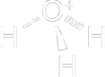A positive charge with an acidic hydrogen |  A partial positive charge with an acidic hydrogen A partial positive charge with an acidic hydrogen |  A boron atom lacking an octet A boron atom lacking an octet |
A third characteristic that can make a molecule or ion electrophilic is a relatively weak bond to an atom that can depart as a stable ion or molecule. These electrophilic species can be considered as electron seeking because their reactions with nucleophiles create stronger bonds and therefore more stable molecules. In such cases, there is often no partial or full positive charge on the electrophilic atom. Molecular halogens (X2) are good examples. Their bonds are weak relative to the ones they form upon reaction with a nucleophile; this process is further aided by release of a stable halogen anion (X2−). Another example of a molecule that is electrophilic for these reasons is methyl iodide (we examine its reactions with nucleophiles in Chapter 9). There is little to no charge polarity in methyl iodide. However, the carbon is electrophilic because its bond to iodine is weak, and reaction with a nucleophile produces the stable iodide (I2−) anion.
| Cl−Cl A weak bond between chlorine atoms | Br−Br A weak bond between bromine atoms | CH3−I A weak bond between a carbon and iodine atom |
Addition of Hydrogen Halides
The hydrogen halides HCl, HBr, and HI add to alkenes to give haloalkanes (alkyl halides). In a typical experiment, the gaseous hydrogen halide, which may be HCl, HBr, or HI, is bubbled through pure or dissolved alkene. Alternatively, HX can be added in a solvent, such as acetic acid. HCl reacts sluggishly compared to the other two acids. Aqueous work-up furnishes the haloalkane in high yield. Addition of HBr to ethylene gives bromoethane (ethyl bromide):
| 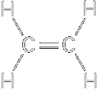Ethene (Ethylene | + | HBr | ⟶ | 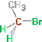Bromoethane (Ethyl bromide) |
The Markovnikov rule predicts regioselectivity in electrophilic additions to unsymmetric alkenes
Are additions of HX to unsymmetric alkenes regioselective? To answer this question, let us consider the reaction of propene with hydrogen chloride. Two products are possible: 2-bromopropane and 1-bromopropane. However, the only product observed is 2-bromopropane. We say that addition of HBr to propene is highly regioselective. A regioselective reaction is a reaction in which one direction of bond forming or breaking occurs in preference to all other directions of bond forming or breaking.
| Propene (Propylene) | + | HBr | ⟶ | 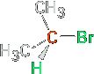2-Bromopropane | + | 1-Bromopropane (not observed |
This regioselectivity was noted by Vladimir Markovnikov who made the generalization known as Markovnikov’s rule: in the addition of H−X to an alkene, hydrogen adds to the double-bonded carbon that has the greater number of hydrogens already bonded to it. The key is the relative stability of the resulting carbocation intermediates.
Mechanism
| 2-Butene (a nucleophile) + (an electrophile) | slow, rate determining ⇌ | sec-Butyl cation | + | Br− |
Step 2: Make a new bond between a nucleophile and an electrophile. Reaction of the sec-butyl cation (an electrophile) with bromide ion (a nucleophile) completes the valence shell of carbon and gives 2-bromobutane.
| Br− Bromide ion (a nucleophile) | + |
sec-Butyl cation (an electrophile) | fast ⟶ | 2-Bromobutane (a racemic mixture) |
The regiochemistry of the reaction is determined in the first step, in which the proton attacks the π system to give an intermediate carbocation. Carbocation generation is rate determining; once it occurs, reaction with chloride proceeds quickly. Let us look at the crucial fi rst step in more detail. The proton may attack either of the two carbon atoms of the double bond. Addition to the internal carbon leads to the primary propyl cation. The addition of a proton to the alkene, results in formation of a cationic intermediate. One carbon atom in this intermediate has only six electrons in its valence shell and carries a charge of +1. A species containing a positively charged carbon atom is called a carbocation (carbon + cation). Such carbon-containing cations are also called carbonium ions and carbenium ions. Carbocations are classified as primary (1°), secondary (2°), or tertiary (3°), depending on the number of carbon atoms bonded to the carbon bearing the positive charge. All carbocations are electrophiles as well as Lewis acids
A primary carbocation is too unstable to be a reasonable reaction intermediate in solution. In contrast, secondary cations form relatively readily. In addition, notice that the transition states for the two possible modes of addition show positive charge building up on primary and secondary carbons, respectively. Thus, the energies, and stabilities, of the transition states will refl ect the relative energies of the cations to which they lead.
| Propene | +HBr | ⟶ |
 Propyl cation Propyl cation (a 1° carbocation) | ⟶ | CH3CH2CH2Br 1-Bromopropane (not formed) |
| ⟶ | Isopropyl cation (a 2° carbocation) | ⟶ | 2-Bromopropane (product formed) |
The observed product is 2-bromopropane, indicating that the 2° carbocation intermediate is formed in preference to the 1° carbocation intermediate. Similarly, in the reaction of HBr with 2-methylpropene, proton transfer to the carbon-carbon double bond might form either the isobutyl cation (a 1° carbocation) or the tert-butyl cation (a 3° carbocation).
| 2-Methylpropene | +HBr | ⟶ | Isobutyl cation (a 1° carbocation) | ⟶ | 
1-Bromo-2-methylpropane (not formed) |
| ⟶ | tert-Butyl cation (a 3° carbocation) | ⟶ | 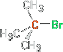2-Bromo-2-methylpropane (product formed) |
The observed product of this reaction is 2-bromo-2-methylpropane, indicating that the 3° carbocation is formed in preference to the 1° carbocation. From experiments such as these and a great amount of other experimental evidence, we know that a 3° carbocation both is more stable and requires a lower activation energy for its formation than a 2° carbocation. A 2° carbocation, in turn, is more stable and requires a lower activation energy for its formation than a 1° carbocation. Methyl and 1° carbocations are so unstable they are rarely observed in solution. It follows, then, that a more stable carbocation intermediate forms faster than a less stable carbocation intermediate. The following are four alkyl carbocations list in increasing oreder of stability.
Methyl
>
(a 1° carbocation)
>
(a 2° carbocation)
>
(a 3° carbocation)
Now that we know the order of stability of carbocations, how do we account for this order? As we saw during the discussion of anion stability in Section 4.5, a system bearing a charge (either positive or negative) is more stable if the charge is delocalized. Using this principle, we can explain the order of stability of carbocations if we assume that alkyl groups bonded to a positively charged carbon release electron density toward that carbon and thereby help delocalize the positive charge on the cation. We account for the electron-releasing ability of alkyl groups bonded to a cationic carbon by two effects: the inductive effect and hyperconjugation.
Inductive Effect
The inductive effect operates in the following way. The electron deficiency of the cationic carbon exerts an electron-withdrawing inductive effect that polarizes electrons from adjacent sigma bonds toward it. In this way, the positive charge of the cation is not localized on the trivalent carbon but rather is delocalized over nearby atoms. The larger the volume over which the positive charge is delocalized, the greater the stability of the cation. Thus, as the number of alkyl groups bonded to the cationic carbon increases, the stability of the cation increases. Figure 6.5 illustrates the electron-withdrawing inductive effect of the positively charged carbon and the resulting delocalization of charge. According to quantum mechanical calculations, the charge on carbon in the methyl cation is approximately 10.645, and the charge on each of the hydrogen atoms is 10.118. Thus, even in the methyl cation, the positive charge is not localized entirely on carbon. Rather, it is delocalized over the volume of space occupied by the entire ion. Delocalization of charge is even much more extensive in the tert-butyl cation.
Hyperconjugation
The second related effect by which alkyl groups stabilize carbocations is hyperconjugation. Hyperconjugation involves partial overlapping of the σ-bonding orbital of an adjacent C−H or C−C bond of the alkyl group with the vacant 2p orbital of the cationic carbon (Figure 6.6). In other words, some electron density of the alkyl group C−H or C−C bond is mixed into the 2p orbital. As shown in Figure 1.25 for analogous mixing, the result is lower and higher energy orbitals, the first filled and the second empty, respectively. In the case of hyperconjugation, the populated orbital remains primarily C−H bonding (Figure 6.6b) and the empty orbital remains primarily 2p (Figure 6.6c), but Figure 6.6b and c both show the delocalization that is the hallmark of hyperconjugation. The net result of hyperconjugation is an increase of electron density on the cationic carbon, thereby delocalizing the positive charge onto the adjacent alkyl groups. As more alkyl groups are bonded to a cationic carbon, the hyperconjugation effect becomes stronger and the carbocation becomes more stable.